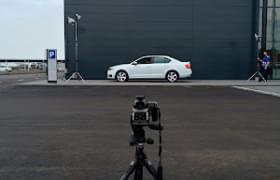
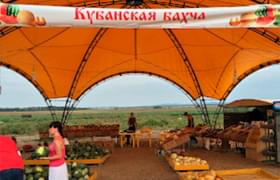

Список фотографий пользователей
Взгляните на фотографии, которые выкладывают пользователи! Видите, как не хватает ваших?
Анна (5 минут назад)Прыгать или нет? Напишите в комментарии свой совет и смотрите прямую трансляцию в перископе, задавайте свои вопросы!
Нравится: 215
 Левон (5 часов назад)
Вчера он на луну летал, сегодня в руки к нам попал.
Нравится: 356
Антон (12 часов назад)
Соседи будут рады!
Нравится: 666
Борис (20 часов назад)
Здесь могла быть ваша цитата о высоком и вечном.
Нравится: 215
 Сергей (25 часов назад)
Самая кубанская в мире!
Нравится: 4
Максим (40 часов назад)
Где снег-то?
Нравится: 150
Надежда (45 часов назад)
Всем GM и взаимные лайки!
Нравится: 2560
Затмите их всех!
Выкладывайте все, что накопилось в телефоне!